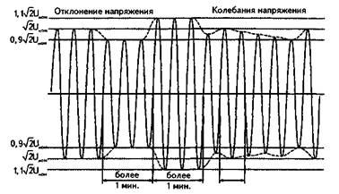
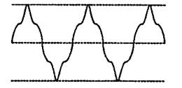
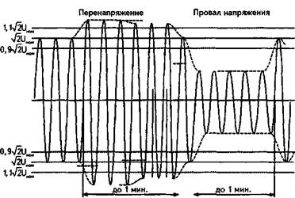
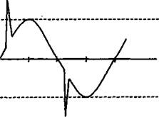

Что такое качество электроэнергии

Электрическая энергия характеризуется тремя показателями: частотой, напряжением и формой его кривой. Частота напряжения является характеристикой баланса активной мощности. Если активная мощность, которую вырабатывают источники, не менее требуемой приемниками электрической энергии, то частота напряжения в электроэнергетической системе равна 50 Гц. В случае недостатка активной мощности частота напряжения в системе уменьшается и наступает установившийся режим на пониженной частоте. Возможность установления режима объясняется тем, что асинхронные и синхронные электродвигатели, являющиеся основными приемниками в промышленности, уменьшают свою потребляемую мощность при снижении частоты.
Напряжение в системе является показателем баланса реактивной мощности. Если в системе существует нехватка реактивной мощности, то напряжение у потребителей становится ниже номинального. При избытке реактивной мощности напряжение у потребителей превышает номинальное значение.
Реактивную мощность условно считают генерируемой и потребляемой. Генерируемая реактивная мощность — реактивная мощность конденсаторов, перевозбужденных синхронных двигателей или перевозбужденных синхронных генераторов. Потребляемая реактивная мощность — реактивная мощность асинхронных электродвигателей или недовозбужденных синхронных машин.
Напряжение и форма его кривой в соответствии со стандартом на качество электрической энергии (ГОСТ 13109-97) характеризуется следующими показателями:
отклонение частоты ?f;
установившееся отклонение напряжения ?Uу;
колебания напряжения;
несинусоидальность напряжения;
несимметрия напряжения;
провалы напряжения;
перенапряжения.
Отклонением напряжения ?U называют разность между значениями напряжения U в данной точке системы электроснабжения в рассматриваемый момент времени и его номинальным значением, т. e.?U = U — Uном.
Термин «установившееся» означает, что измерение напряжения должно производиться в установившемся режиме работы системы, при отсутствии переключений и др. Продолжительность измерений должна составлять 1 мин.
Нормально допустимые и предельно допустимые значения установившегося отклонения напряжения равны соответственно ±5 и ±10% от номинального напряжения сети. На рис. 1 приведен график, иллюстрирующий смысл понятия «отклонение напряжения». Показан уровень амплитуды номинального напряжения ?2Uном).

Рис. 1. Отклонения и колебания напряжений
Там же показаны пониженное (с амплитудой 0,9?2Uном) и повышенное (с амплитудой 1,1?2Uном) напряжения. Отклонения напряжения в данном случае составляют -10%Uном и +10%Uном
Колебания напряжения с частотой не выше 10 Гц оказывают вредное влияние на зрение людей, особенно при выполнении работ, требующих значительного зрительного напряжения. Параметры, характеризующие колебания, специфичны и здесь не рассматриваются. Колебания напряжения появляются при переменной нагрузке у потребителя.
Несинусоидальность напряжения характеризуется коэффициентами искажения синусоидальности и гармонических составляющих. На рис.2 приведена кривая напряжения, отличающаяся от синусоиды. Несинусоидальную кривую, как доказывается в математике, можно разложить в ряд Фурье. Ряд Фурье представляет собой сумму синусоидальных кривых и постоянную величину.
Обычно в установившемся режиме ряд содержит следующие величины:

Рис. 2. Кривая несинусоидального напряжения
U(t) = Um1 sin(?1t + ?1) + Um3 sin(3?1t + ?3) +Um5sin(5?1t + ?5) + ...,
где Um1 — амплитуда синусоиды основной частоты f ? 50Гц;
Um3 — амплитуда составляющей с частотой f3 = 3f 1 ? 150 Гц;
Um5 — амплитуда составляющей с частотой f = 5f1 ? 250 Гц;
?1, ?3, ?5, ... — начальные фазы.
На кривой (рис. 2) имеют место составляющие основной частоты и частоты 150 Гц. Последнюю называют третьей гармонической составляющей. Чаще всего третья гармоническая возникает из-за насыщения магнитопроводов силовых трансформаторов. Составляющие с частотами f > 50 Гц называют высшими гармоническими. Появление их в кривых напряжения и тока крайне нежелательно, т. к. они:
1) вызывают увеличение потерь мощности и энергии в системе электроснабжения;
2) создают помехи для работы средств связи, автоматики, защиты и телемеханики;
3) создают помехи бытовым приборам (телевидение, радио и др.).
Несимметрия напряжения оценивается по относительному содержанию обратной и нулевой последовательностей в фазном или линейном (междуфазном) напряжении. Несимметрия напряжения приводит к увеличению потерь в системе и увеличивает отклонения напряжения.
Отклонением частоты называют разность между действительным и номинальным (50 Гц) значением, т. е.
?f = f - 50, Гц.
Нормально допустимые значения ?f составляют ±0,2 Гц, а предельно допустимые ±0,4 Гц.
Провалом напряжения (рис. 3) называют внезапное снижение напряжения с последующим его восстановлением. Предельно допустимая длительность провала напряжения в городских электрических сетях равна 30 с.

Рис. 3. Перенапряжение и провал напряжения
Для непрерывных производств предельно допустимая длительность провалов напряжения может быть меньше1 с.
Провал напряжения опасен для потребителей с непрерывным технологическим процессом. В системах электроснабжения городов к таким потребителям, в частности, относятся банки. Прекращение электропитания персональных компьютеров может привести к потере оперативной информации и значительному ущербу.
Импульс напряжения (рис. 4) и временное перенапряжение (рис. 3) характеризуют повышение напряжения выше номинального значения.

Рис. 4. Импульс напряжения
Перенапряжения опасны для изоляции и могут привести к ее пробою и, как следствие, к КЗ.
В табл. 1 приведены наиболее вероятные виновники ухудшения качества электроэнергии.
В настоящее время при лицензировании основной деятельности электроснабжающих организаций требуется производить контроль показателей качества электроэнергии. Значения указанных показателей должны находиться в допустимых пределах. Для контроля указанных показателей используют специальные дорогостоящие микропроцессорные системы, что объясняет высокую стоимость работ по сертификации качества электроэнергии.
Таблица 1 Свойства электрической энергии, показатели и наиболее вероятные виновники ухудшения качества электроэнергии
|
Свойства электрической энергии
|
Показатели КЭ
|
Наиболее вероятные виновники ухудшения КЭ
|
|
Отклонение напряжения
|
Установившееся отклонение напряжения
|
Энергоснабжающая организация
|
|
Колебания напряжения
|
Размах изменения напряжения.
Доза фликера
|
Потребитель с переменной нагрузкой
|
|
Несинусоидапьность напряжения
|
Коэффициент искажения синусоидальности кривой напряжения.
Коэффициент n-ой гармонической составляющей напряжения
|
Потребитель с нелинейной нагрузкой
|
|
Несимметрия трехфазной системы напряжения
|
Коэффициент несимметрии напряжений по обратной
последовательности. Коэффициент несимметрии< напряжений по нулевой
последовательности
|
Потребитель с несимметричной нагрузкой
|
|
Отклонение частоты
|
Отклонение частоты
|
Энергоснабжающая организация
|
|
Провал напряжения
|
Длительность провала напряжения
|
Энергоснабжающая организация
|
|
Импульс напряжения
|
Импульсное напряжение
|
Энергоснабжающая организация
|
|
Временное перенапряжение
|
Коэффициент временного перенапряжения
|
Энергоснабжающая организация
|
Особое внимание уделяется сертификации качества электроэнергии, продаваемой гражданам. Эта сертификация заключается в контроле отклонений частоты и напряжения. Следует подчеркнуть, что частота напряжения не зависит от электрических сетей, а задается генераторами электростанций, т. е. не может лежать в поле ответственности электрических сетей. Недопустимые отклонения напряжения возникают в электрической сети чаще всего, если линии 0,4 кВ имеют чрезмерно большую длину и сильно загружены.